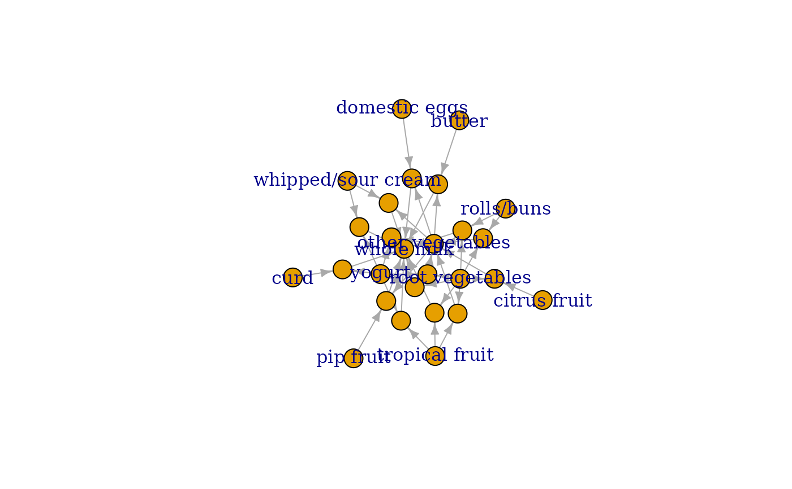
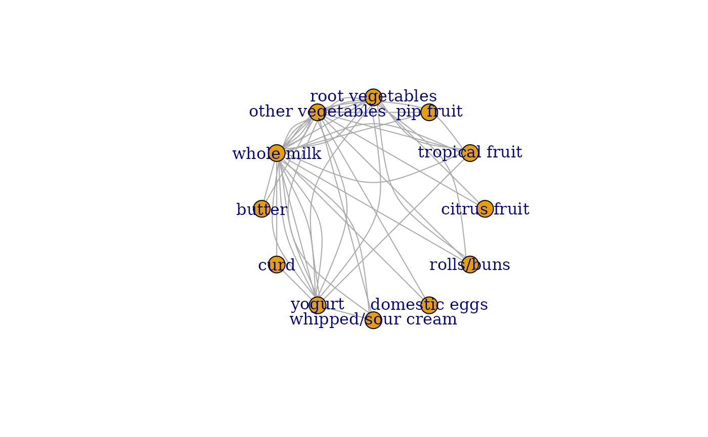

Function to convert associations (rules, itemsets) into a igraph object and saves the graph in different formats (e.g., GraphML, dimacs, dot).
Usage
associations2igraph(x, associationsAsNodes = TRUE)
saveAsGraph(x, file, format = "graphml", ...)Arguments
- x
an object of class "rules" or "itemsets".
- associationsAsNodes
should associations be translated into nodes or represented by edges?
- file
file name.
- format
file format (e.g., "edgelist", "graphml", "dimacs", "gml", "dot"). See
igraph::write_graph().- ...
further arguments are passed on to
associations2igraph().
Details
Associations are represented as nodes: All items in the associations are connected to the association node. For itemsets, the wdges are undirected, for rules, the edges are directed towards the rhs
When associations are represented as edges: For rules, each item in the LHS is connected with a directed edge to the item in the RHS. For itemsets, undirected edges for each pair of item in the itemset are created.
Examples
data("Groceries")
rules <- apriori(Groceries, parameter = list(support = 0.01, confidence = 0.5))
#> Apriori
#>
#> Parameter specification:
#> confidence minval smax arem aval originalSupport maxtime support minlen
#> 0.5 0.1 1 none FALSE TRUE 5 0.01 1
#> maxlen target ext
#> 10 rules TRUE
#>
#> Algorithmic control:
#> filter tree heap memopt load sort verbose
#> 0.1 TRUE TRUE FALSE TRUE 2 TRUE
#>
#> Absolute minimum support count: 98
#>
#> set item appearances ...[0 item(s)] done [0.00s].
#> set transactions ...[169 item(s), 9835 transaction(s)] done [0.00s].
#> sorting and recoding items ... [88 item(s)] done [0.00s].
#> creating transaction tree ... done [0.00s].
#> checking subsets of size 1 2 3 4 done [0.00s].
#> writing ... [15 rule(s)] done [0.00s].
#> creating S4 object ... done [0.00s].
# convert rules into a graph with rules as nodes
library("igraph")
#>
#> Attaching package: ‘igraph’
#> The following object is masked from ‘package:arules’:
#>
#> union
#> The following objects are masked from ‘package:stats’:
#>
#> decompose, spectrum
#> The following object is masked from ‘package:base’:
#>
#> union
g <- associations2igraph(rules)
g
#> IGRAPH 5e1a5cf DN-B 27 45 --
#> + attr: name (v/c), label (v/c), index (v/n), type (v/n), support
#> | (v/n), confidence (v/n), coverage (v/n), lift (v/n), count (v/n)
#> + edges from 5e1a5cf (vertex names):
#> [1] 27 ->assoc1 30 ->assoc1 23 ->assoc2 26 ->assoc2
#> [5] 23 ->assoc3 55 ->assoc3 30 ->assoc4 31 ->assoc4
#> [9] 23 ->assoc5 31 ->assoc5 16 ->assoc6 23 ->assoc6
#> [13] 14 ->assoc7 20 ->assoc7 15 ->assoc8 20 ->assoc8
#> [17] 15 ->assoc9 20 ->assoc9 15 ->assoc10 30 ->assoc10
#> [21] 20 ->assoc11 30 ->assoc11 20 ->assoc12 30 ->assoc12
#> [25] 20 ->assoc13 56 ->assoc13 20 ->assoc14 56 ->assoc14
#> + ... omitted several edges
plot(g)

# convert the graph into a tidygraph
library("tidygraph")
#>
#> Attaching package: ‘tidygraph’
#> The following object is masked from ‘package:igraph’:
#>
#> groups
#> The following object is masked from ‘package:stats’:
#>
#> filter
as_tbl_graph(g)
#> # A tbl_graph: 27 nodes and 45 edges
#> #
#> # A directed acyclic simple graph with 1 component
#> #
#> # Node Data: 27 × 9 (active)
#> name label index type support confidence coverage lift count
#> <chr> <chr> <int> <dbl> <dbl> <dbl> <dbl> <dbl> <int>
#> 1 14 citrus fruit 14 1 NA NA NA NA NA
#> 2 15 tropical fruit 15 1 NA NA NA NA NA
#> 3 16 pip fruit 16 1 NA NA NA NA NA
#> 4 20 root vegetables 20 1 NA NA NA NA NA
#> 5 23 other vegetables 23 1 NA NA NA NA NA
#> 6 25 whole milk 25 1 NA NA NA NA NA
#> 7 26 butter 26 1 NA NA NA NA NA
#> 8 27 curd 27 1 NA NA NA NA NA
#> 9 30 yogurt 30 1 NA NA NA NA NA
#> 10 31 whipped/sour cream 31 1 NA NA NA NA NA
#> # ℹ 17 more rows
#> #
#> # Edge Data: 45 × 2
#> from to
#> <int> <int>
#> 1 8 13
#> 2 9 13
#> 3 5 14
#> # ℹ 42 more rows
# convert the generating itemsets of the rules into a graph with itemsets as edges
itemsets <- generatingItemsets(rules)
itemsets
#> set of 15 itemsets
g <- associations2igraph(itemsets, associationsAsNodes = FALSE)
g
#> IGRAPH bb30b18 UN-- 12 45 --
#> + attr: name (v/c), label (v/c), index (v/n), index (e/n), support
#> | (e/n)
#> + edges from bb30b18 (vertex names):
#> [1] 25--27 25--30 27--30 23--25 23--26 25--26 23--25 23--55 25--55 25--30
#> [11] 25--31 30--31 23--25 23--31 25--31 16--23 16--25 23--25 14--20 14--23
#> [21] 20--23 15--20 15--23 20--23 15--20 15--25 20--25 15--25 15--30 25--30
#> [31] 20--23 20--30 23--30 20--25 20--30 25--30 20--23 20--56 23--56 20--25
#> [41] 20--56 25--56 23--25 23--30 25--30
plot(g, layout = layout_in_circle)

# save rules as a graph so they can be visualized using external tools
saveAsGraph(rules, "rules.graphml")
## clean up
unlink("rules.graphml")